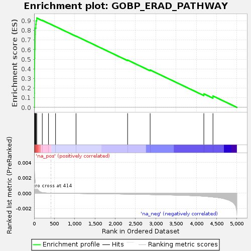
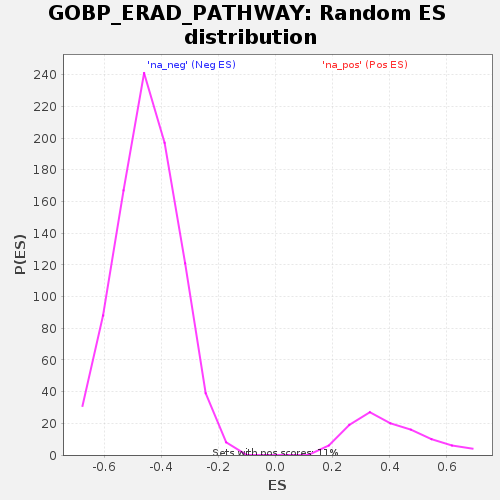

| Dataset | GEP4_vs_GEP6_residuals |
| Phenotype | NoPhenotypeAvailable |
| Upregulated in class | na_pos |
| GeneSet | GOBP_ERAD_PATHWAY |
| Enrichment Score (ES) | 0.9288499 |
| Normalized Enrichment Score (NES) | 2.3331892 |
| Nominal p-value | 0.0 |
| FDR q-value | 0.0 |
| FWER p-Value | 0.0 |

| SYMBOL | RANK IN GENE LIST | RANK METRIC SCORE | RUNNING ES | CORE ENRICHMENT | |
|---|---|---|---|---|---|
| 1 | DERL3 | 6 | 0.003 | 0.1468 | Yes |
| 2 | XBP1 | 8 | 0.003 | 0.2744 | Yes |
| 3 | HERPUD1 | 9 | 0.003 | 0.4019 | Yes |
| 4 | UBE2J1 | 12 | 0.002 | 0.5110 | Yes |
| 5 | DNAJB9 | 17 | 0.002 | 0.6040 | Yes |
| 6 | SEL1L | 22 | 0.002 | 0.6810 | Yes |
| 7 | HSP90B1 | 23 | 0.002 | 0.7584 | Yes |
| 8 | SDF2L1 | 27 | 0.002 | 0.8242 | Yes |
| 9 | ERLEC1 | 42 | 0.001 | 0.8632 | Yes |
| 10 | MAN1A1 | 49 | 0.001 | 0.9010 | Yes |
| 11 | HSPA5 | 65 | 0.001 | 0.9288 | Yes |
| 12 | CAV1 | 201 | 0.000 | 0.9048 | No |
| 13 | YOD1 | 354 | 0.000 | 0.8747 | No |
| 14 | AQP11 | 528 | -0.000 | 0.8403 | No |
| 15 | UBXN10 | 1033 | -0.000 | 0.7411 | No |
| 16 | NCCRP1 | 2305 | -0.000 | 0.4917 | No |
| 17 | RCN3 | 2861 | -0.000 | 0.3884 | No |
| 18 | RNFT2 | 4185 | -0.000 | 0.1407 | No |
| 19 | TRIM25 | 4410 | -0.001 | 0.1182 | No |
